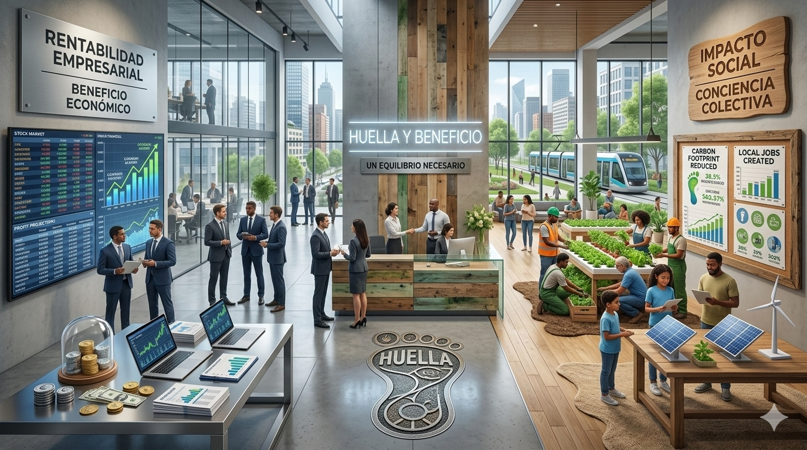
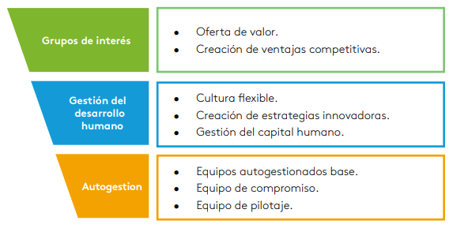
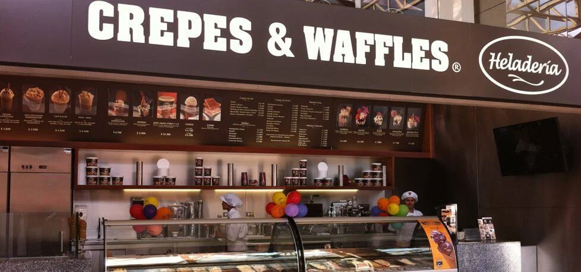
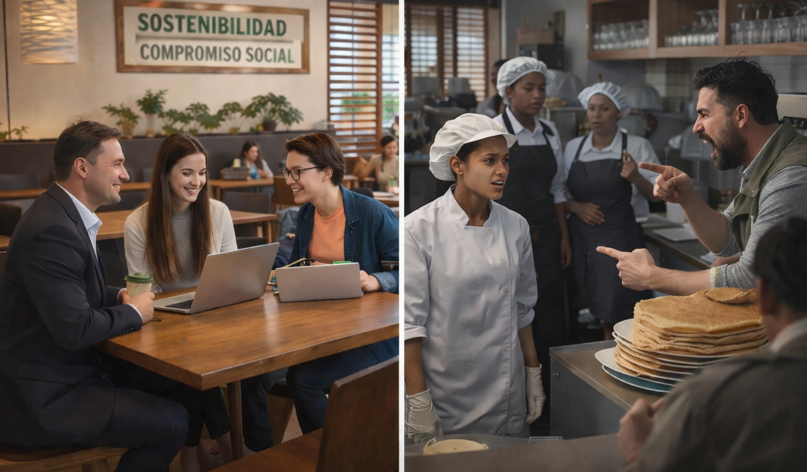

Propósito o fachada: el dilema de las empresas que prometen cambiar Colombia
En Colombia, hablar de “empresas con propósito” ya no es una rareza; el lenguaje de la sostenibilidad, el bienestar laboral, la inclusión y el impacto social se volvió parte del vocabulario corporativo, junto a la figura legal de las sociedades BIC existe desde la Ley 1901 de 2018 y su reglamentación en el Decreto 2046 de 2019, y la Superintendencia de Sociedades mantiene hoy un marco específico de supervisión, reporte y sostenibilidad para estas compañías.

Sin embargo, la pregunta incómoda sigue en pie: ¿esas empresas realmente están transformando el país o simplemente aprendieron a vender mejor una imagen ética? Mi tesis es clara: en Colombia el modelo de empresas con propósito sí representa un avance frente a la empresa tradicional, pero su impacto real sigue siendo desigual y en algunos casos, contradictorio; puesto que el propósito no debe medirse por el discurso, sino por la coherencia entre lo que la empresa promete, lo que hace con sus trabajadores, lo que produce en sus territorios y la manera en que responde cuando aparece el conflicto.
La promesa del propósito y la distancia con la realidad
El referente de pensamiento del eje 3 plantea justamente esa vara de medida, las organizaciones con propósito se entienden como aquellas que ponen el beneficio mutuo y el valor social por encima de la rentabilidad aislada y articulan tres núcleos: grupos de interés, gestión del desarrollo humano y autogestión; bajo esa lógica, una empresa no debería limitarse a generar utilidades: también tendría que crear valor económico, social y ambiental, fortalecer a las personas y tomar decisiones con sentido ético. Esa es la promesa y el problema es que, en la práctica colombiana, la distancia entre la promesa y la realidad todavía es demasiado visible.
Principios organizaciones con propósito

El primer argumento a favor del modelo es que sí ha introducido una ruptura relevante frente a la visión empresarial clásica. Durante años, la responsabilidad social en muchas compañías fue un apéndice reputacional: una fundación por aquí, una campaña verde por allá, un lenguaje amable para públicos externos. Hoy, al menos en teoría, el propósito ya no aparece como un extra sino como parte del corazón del negocio. Ese cambio no es menor. La normatividad BIC exige reportes, compromisos y estándares asociados a gobernanza, trabajadores, comunidad y medio ambiente. No convierte automáticamente a una empresa en ética, pero sí la obliga a declararse públicamente y a dejar rastro de sus compromisos.
El impacto de los stakeholders

Crepes & Waffles y la promesa visible del propósito
Ese avance se observa mejor cuando se aterriza en casos concretos. Crepes & Waffles, aunque no es el ejemplo típico de una gran firma que se autopromociona con siglas técnicas, se ha instalado en el imaginario colombiano como una empresa con propósito por decisiones visibles de inclusión y de encadenamiento social. Según un perfil reciente, la compañía trabaja con más de 1.000 familias productoras en Colombia, compra de forma directa y a precios superiores a los mercados locales, y cerca del 90% de sus 8.000 empleados son mujeres, muchas de ellas cabeza de hogar. En un país donde la desigualdad territorial y de género sigue siendo estructural, ese tipo de decisiones sí importa. No es retórica vacía decir que una empresa puede usar su cadena de abastecimiento para intervenir realidades rurales, ni es irrelevante abrir oportunidades laborales a mujeres que históricamente han estado en condiciones de mayor vulnerabilidad económica.

Alpina y la institucionalización del discurso sostenible
Algo parecido puede decirse de Alpina, que hoy se presenta como Alpina Productos Alimenticios SAS BIC en su informe de gestión de 2024 y sostiene una agenda explícita de sostenibilidad. La compañía publica informes de sostenibilidad, expone compromisos en diversidad, derechos humanos, desarrollo del campo, cadena de valor sostenible y desarrollo humano, y en su narrativa reciente vincula su operación con miles de productores y con metas ambientales y sociales de largo plazo. Además, la propia marca presenta compromisos en descarbonización, circularidad, ganadería sostenible y desarrollo social. Esto muestra que el modelo de propósito no es una fantasía académica: sí existen empresas que han incorporado metas más amplias que el margen financiero trimestral.
Entre los mejores del ranking ESG empresarial de Merco

El ranking Merco Responsabilidad ESG Colombia 2025 reveló a las compañías con mejor desempeño en sostenibilidad, ética y gobierno corporativo en el país.
Pero ahí empieza el segundo argumento, y también la primera incomodidad seria: tener propósito declarado no equivale a producir justicia organizacional real. El problema de muchas empresas con propósito no es que hagan todo mal, sino que hacen cosas valiosas mientras mantienen zonas oscuras en temas laborales, éticos o de poder. Y justamente ahí es donde el concepto de propósito se pone a prueba.

Cuando el propósito encuentra su prueba más difícil
En el caso de Alpina, por ejemplo, la discusión no puede quedarse en sus reportes de sostenibilidad. En 2024, el Ministerio del Trabajo formuló cargos contra la empresa por presuntamente promover un pacto colectivo con trabajadores no sindicalizados y atentar contra el derecho de asociación. Esa noticia no destruye automáticamente todo lo bueno que la empresa pueda hacer, pero sí abre una pregunta de fondo: ¿puede una compañía presentarse como modelo de beneficio colectivo si, al mismo tiempo, enfrenta cuestionamientos por derechos fundamentales del trabajo? Si el propósito no protege la participación laboral, la libertad de asociación y la dignidad del trabajador, entonces se vuelve parcial, decorativo o selectivo.
Crepes & Waffles también exhibe esa tensión. Su imagen pública ha sido construida alrededor de la inclusión femenina, la sensibilidad social y el vínculo con productores rurales. Pero el Ministerio del Trabajo difundió el caso de una decisión judicial que ordenó reintegrar a una trabajadora víctima de acoso sexual laboral, en lo que se presentó como la primera acción de tutela que reconoció el fuero de estabilidad reforzada en ese contexto. Otra vez, el punto no es negar el impacto social de la empresa, sino subrayar una verdad incómoda: una empresa puede tener un discurso admirable hacia afuera y, al mismo tiempo, fallar gravemente en la protección interna de las personas. Y cuando eso ocurre, el propósito deja de ser una evidencia y se convierte en una promesa incompleta.

El riesgo de la incoherencia administrada
Este contraste permite formular el tercer argumento: en Colombia, el mayor riesgo del modelo no es el fracaso total, sino la incoherencia administrada.
Es decir, empresas que sí hacen cosas valiosas, sí generan cierto impacto positivo, pero no necesariamente transforman de fondo sus relaciones laborales, sus estructuras de poder o sus lógicas de producción. En ese punto, el propósito puede terminar funcionando más como una herramienta de diferenciación reputacional que como una transformación empresarial profunda. En un país como Colombia, donde persisten desigualdades históricas, conflictos territoriales y fragilidad institucional, el discurso del impacto social no puede evaluarse con ingenuidad. Debe examinarse con evidencia, con resultados y con capacidad crítica.
Una mejora real, pero no suficiente por sí sola
Algunos defensores de este modelo podrían argumentar que, aun con contradicciones, las empresas con propósito ya representan una mejora frente a la empresa tradicional. Y en parte tienen razón. No es menor que hoy una compañía deba hablar de bienestar, sostenibilidad, derechos humanos o comunidades. Tampoco es menor que existan marcos normativos que exijan reportes y compromisos verificables. Sin embargo, ese avance no debe llevar a idealizaciones. Visibilizar un problema no equivale a resolverlo, y declarar un propósito no equivale a vivirlo.
Por eso, la discusión no debería plantearse como una oposición simple entre rentabilidad e impacto. La verdadera pregunta es otra: qué tipo de rentabilidad necesita Colombia y bajo qué condiciones puede considerarse legítima. Si una empresa obtiene ganancias mientras fortalece el desarrollo humano, protege derechos, crea valor compartido y responde con coherencia a sus grupos de interés, entonces el propósito tiene sentido. Pero si solo usa ese lenguaje para mejorar su imagen pública sin alterar de fondo sus prácticas, entonces estamos ante una versión sofisticada del greenwashing.
Rentabilidad e impacto real

La autenticidad del propósito se juega en la coherencia
En conclusión, el modelo de empresas con propósito en Colombia no debe ser descartado, pero tampoco celebrado sin reservas. Representa una posibilidad real de transformación, sí, pero solo cuando el propósito se traduce en decisiones verificables sobre trabajo digno, sostenibilidad, comunidad y gobernanza ética. El futuro del país no depende de empresas que aprendan a hablar mejor, sino de empresas que estén dispuestas a actuar de manera coherente incluso cuando hacerlo implique costos, tensiones o renuncias. Ahí, y no en el discurso, se juega la autenticidad del propósito.